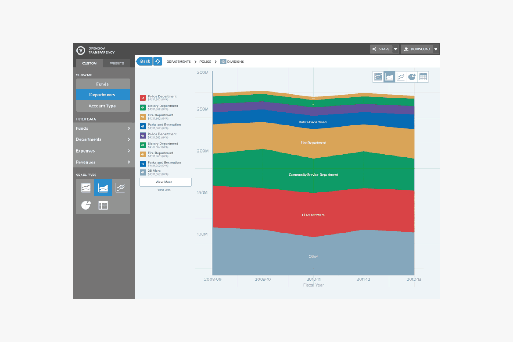
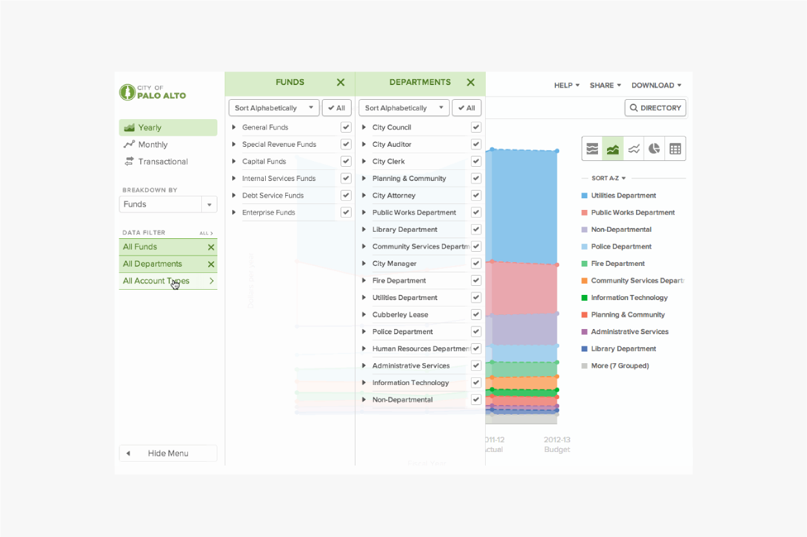
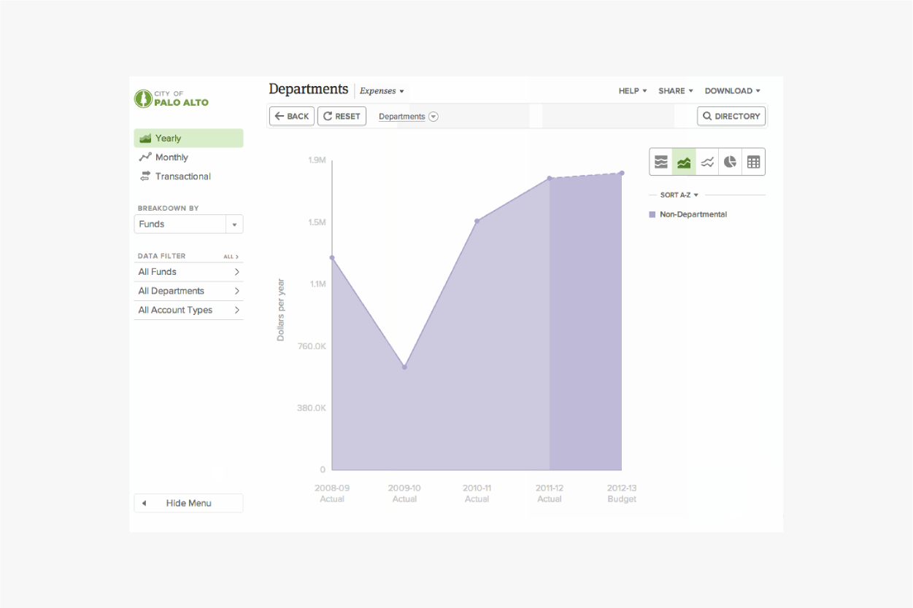

OpenGov Transparency
Rebuilding public trust in open data
Why is it so difficult to see how our government spends our money? That’s the question that OpenGov was trying to solve. After all, what could be more important than transparency to ensure that the precious tax dollars collected by the state are being used with a scrap of responsibility?
Previously, government transparency has always been a bit of a joke, and even when transparency has been available, it’s never been particularly easy to find or understand. Merely making those difficult-to-decipher 500-page budget PDFs and 40,000-row Excel spreadsheets available for download is useful to almost no one. When ordinary citizens can’t realistically find the information that makes a government more transparent, then it isn’t really all that transparent. For far too long, government data has been locked away in agencies, departments, and archaic IT systems. And when data is released, it appears in the form of inaccessible facts and figures. With the goal of increasing the ease with which citizens can find and understand how money is being spent, we created web applications that visualize, analyze, and share government data, allowing ordinary people to not only track spending but also actually understand it.
As the first employee and lead designer at OpenGov, tons of early prototypes were developed to discover better ways to display the government’s massive financial data. As we signed more pilot customers, we received a stream of feedback, which assisted us in identifying several significant issues. To gain a better understanding of the problem, we talked to key officials of almost every single city in the Bay Area, interviewed several journalists, non-profits, and engaged citizens, and evaluated the feature requests and market reports. Key themes began to emerge, such as confusing navigation and filter tools that are difficult to discover. Several usability tests we conducted remotely confirmed the same core issues as well.
One of the most important findings is that the aesthetic was misleading. When we asked people to describe their impressions of the product, we often heard remarks about how sleek it felt, which contradicted the product’s promises of evoking sentiments of transparency. As a result, we decided to make a significant change. And after months of more user research and usability testing, the ideas started to flow. Slowing down long enough to capture each new idea proved our greatest challenge.
We sat down with a number of pilot customers including representatives from the finance department and the mayor’s office, and let them experience just barely functional prototypes. The feedback was overwhelmingly positive. After a few rapid iterations based on the feedback, we conducted another round of user interviews and usability testing with a few additional selected beta customers. I recall walking into each user interview with the concern that they might prefer the old design. Thankfully, the customers approved of our improvements. We hunkered down and spent the following two months producing the final product with that confirmation in hand.
I made accessibility a top priority from the start. Not only do we need to be Section 508 compliant because we engage with government institutions, but I genuinely believe that data should be available to as many people as possible. I conducted extensive research on accessibility and examined countless best practices to help develop the core palette of 40 colors for our interface. The colors were then divided into smaller groups for different kinds of visualizations (with the hope that we would never need to use all 40 colors). We then made appropriate use of alt tags and placed descriptive titles directly on graphs whenever possible to further enhance usability. We also intended to release our design guidelines and research to the public as open source for the public to use for data visualization projects.
Now with everything in place, we are ready to onboard the massive amount of new customers (almost a hundred local governments at the time). The color theming system then enabled us to quickly automate the personalization for a customer's overall user interface and controls, duotone icons, and data visualization based on their brand colors, to create a interface that seems unified yet feel distinctive from one another.
We spent three weeks after the development was completed performing more detailed user testing and customer interviews. With several rapid iterations, the new version resulted in a five-fold increase in sales in the following quarters, and our sales picked up significantly. Within six months, we had analyzing $50B worth of government expenditure throughout the country, and thousands of engaged citizens interact with the site on a daily basis, connecting to their cities' financials and performance with this new medium of open data.

Scope
Brand Identity, Creative Direction, User Research, User Experience Design, Information Architecture, Taxonomy, Data Visualization, Accessibility, Design System, Visual Design, Motion Design, Illustration, Iconography
Design
JJ Moi, Zach Johnston, Andrew Liebchen, Jersy Huang
Development
Nate Levine, Abbey Sparrow, Krishna Rajendragon, Heath Emerson, Matthew Seal, Diego Rodriguez, Chris Chiu, Mike Rosengarten, Loren Abrams, Dmitry Chornyi
Further Reading
On the founding and mission of OpenGov
The startup analyzing $50B in spending
OpenGov is a singularly unsexy startup that just might make a difference